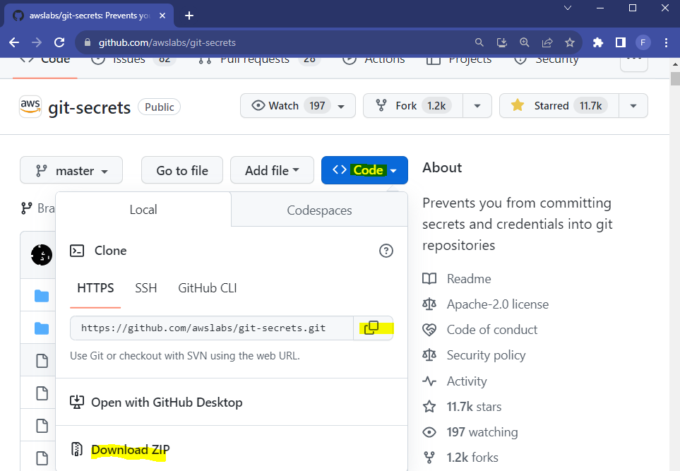
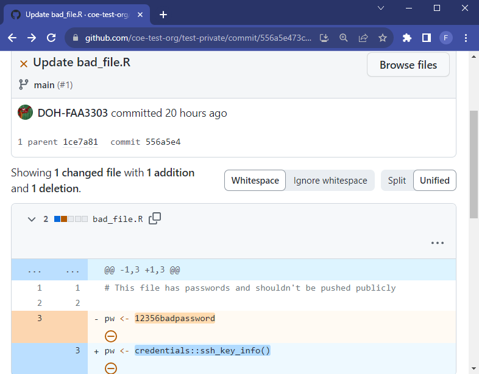
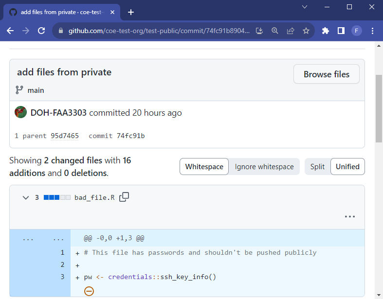

If sensitive information is leaked and commited to the remote repo, then they will stay in the git history (and will require a lot of effort to remove them from the history). The following cannot be included in any repo or any local commit!:
Type
Examples
File Paths
Network drives
Shared internal drives
Server Names
ODBC Connections
Credentials
SSH Keys
Tokens (REDCap, Azure, Github, etc)
Usernames
Passwords
Blob/bucket keys
Identifiable Information
Addresses
Names
Any PHI
Prevent Credential Leaks with Env Variables
There are a number of ways to do this. We typically use a yaml file that can be filled out with personal credentials locally. The file will not be committed to the remote repo
0.0.1 Create a private credentials file
The scripts use a .yml file that contains a list of API tokens, server names, and usernames/passwords specific to each individual user. There are two .yml files. One is a template (containing no actual passwords..) that exists in the repo and serves as a template so every individual user can keep up to date with new credential additions. The other is the individual creds.yml that is in the repo’s .gitignore. This file will never exist in the repo and only exist locally (in the user’s C drive).
0.0.2creds.yml details
The .yml file can work with multiple programming languages including R and Python. They are read in the same way and can be easily adjusted when adding new passwords or using them as configuration files.
They look like this:
local-credentials.yml
# Default is needed to distinguish values.# Leave a blank line (NO SPACES) as the last line in this file or things will break# Quotes aren't necessary, but can be used.default:conn_list_wdrs:Driver:"SQL Server Native Client 11.0"Server:Database:Trusted_connection:ApplicationIntent:fulgent:username: <USERNAME>password: <PASSWORD>
You can have different variables assigned to unique lists, which allows for easy configuration. For example, the list starting with default has variables conn_list_wdrs and fulgent. You can have a different list of variables within the same file like this:
local-credentials.yml
# Default is needed to distinguish values.# Leave a blank line (NO SPACES) as the last line in this file or things will break# Quotes aren't necessary, but can be used.default:conn_list_wdrs:Driver:"SQL Server Native Client 11.0"Server:Database:Trusted_connection:ApplicationIntent:fulgent:username: <USERNAME>password: <PASSWORD>test:conn_list_wdrs:Driver:"SQL Server Native Client 11.0"Server:Database:Trusted_connection:ApplicationIntent:
Now there is a test list with its own variables. This lets us switch a set of variables within our scripts. default applies to the main credentials where test can distinguish which variables should be test or dev scripts specific. Notice below that you can now call the credentials from a .yml file into an R or Python script and the actual credentials will never exist in the code pushed to the repo.
script-in-repo.R
# this script is in the repo, but credentials are hiddenlibrary(yaml)# read in the local credentials yaml filecreds <- yaml::read_yaml("path/to/local-credentials.yml")# pull in the credentialsserver_name <- creds$default$conn_list_wdrs$server
We can even get more specific and add an if-else statement to specify which credential we want to select. This can be helpful if we have a CI/CD pipeline and have a script automatically run on a task scheduler or cron job. We can call the credentials we want in the command line and have the command line code run in my task scheduler. That way we can use multiple different versions of the same script and have all of it be automated. For example, the middle panel uses the commandArgs() to pull any arguments passed to the script in a shell/command line script. In the right panel, the shell script has production and test as second arguments. These are passed to the R script as arg[2]. Now we can use arg[2] in the if-else statement to conditionally select credentials and do it automatically.
script-in-repo.R
args <-commandArgs(TRUE)# this script is in the repo, but credentials are hiddenlibrary(yaml)# read in the local credentials yaml filecreds <- yaml::read_yaml("path/to/local-credentials.yml")# pull in the credentialsif(args[2] =="production"){ server_name <- creds$default$conn_list_wdrs$server} elseif(args[2] =="test"){ server_name <- creds$test$conn_list_wdrs$server}
shell-trigger-script.sh
# Run the production code$ Rscript -e"source('path/script_in_repo.R');" production# Run the test/dev code$ Rscript -e"source('path/script_in_repo.R');" test
0.0.3 Safe Guards - Prevent Accidental Leaks!
Once you have the credentials.yml template in your repo, make sure that nobody on your team (or anyone with write access..) is able to accidentally push changes to the template. We don’t want someone’s passwords or API tokens to exist in GitHub.
This will tell your local git to ignore any changes made to creds_TEMPLATE.yml, but also allow it to exist in the repo (since .gitignore will prevent it from being in the repo)
0.0.3.2 If you need to update the template file run this:
This will allow changes to the template. So when you need to update the template, use this code
And to get a list of files that are “skipped”, use this code:
git ls-files -v . |grep ^S
1 Security Guardrails
Using a .gitignore file for environmental variables/credentials is an excellent guardrail and promotes good coding habits, but we may also want additional guardrails such as hooks.
Hooks are processes that run in the background and can prevent code from being pushed if there is a security flaw. There are two hooks we could use for security; pre-commit hooks and pre-receive hooks
1.1 Pre-commit Hooks
Pre-commit hooks run a process locally when the user attempts to commit code to a git branch. Hooks have many uses. Here we can use them as a security guardrail to prevent accidental credential leaks in committed code.
Clone or download the AWS Git Secrets repo from awslabs GitHub

Extract zip
Open folder and right click install.ps1
Run in Power Shell
Type Y to give permission
CD to a directory where you have the git repository you want to upload, either in PowerShell or R studio terminal
PowerShell
PS> cd path/to/repo/root
Run git secrets –install
PowerShell
git secrets --install
Make or copy the regex file called secrets_key containing the secret patterns into your folder. – make text file – discuss with team what all we want to make illegal.
Make sure the file secrets_key is in your .gitignore. We can’t push that to the remote repo.
Run git secrets --add-provider -- cat ./secrets_key
PowerShell
git secrets --add-provider-- cat ./secrets_key
You can also add prohibited patterns like this
PowerShell
# add a patterngit secrets --add'[A-Z0-9]{20}'# add a literal string, the + is escapedgit secrets --add--literal'foo+bar'# add an allowed patterngit secrets --add-a'allowed pattern'
Test Git history by running
PowerShell
git secrets --scan-history
If something gets flagged and you don’t care about your history anymore: Delete .git folder and reinitialize repository
I would take caution about this point. There might be better ways to clean your git history if you don’t want to get rid of everything.
Test on one of my projects to see if rebasing is a sustainable option
Make repo public
Will automatically scan on every commit and won’t let it commit unless it’s clean - Create a few files to show it working
Note
We can’t use the “Non capture group” feature of regex. Meaning we can’t use patterns like this in our regex: (?:abc) – see https://regexr.com IMPORTANT: Tab separate your regex expressions. Making new lines caused a bit of chaos and took really long to figure out. (you can use multiple tabs to separate them more visually)
NOTE!!
The REGEX strings used in the secrets_key file may be decieving
Make sure to test that the regex flags what you want it to
git secrets --scan-history may take a very long time to run
Check that the secrets_key regex is working by running the process on a repo that you know has secrets in it. For example, in a different folder, run all the pre-commit hook steps above and add a known “bad” string into the regex. For example, in the regex put bad_string and in a file in that folder put bad_string. When you scan it should get flagged.
If secret scanning is taking too long, you might want to check certain files first. I’ve found that HTML files take a very long time to scan for secrets. If you’re using linux or macOS you should be able to scan certain files via grob like this git secrets --scan path/to/files*. If you’re using windows it probably won’t work. In that case, if you only want certain file extentsions to be scanned, use this function in powershell below. Copy the code and save it as secret-scanner.ps1:
secret-scanner9000.ps1
# Example Usage# write this in the powershell terminal, adjust for the file type(s) you want to scan - can be multiple types: $fileExtensions = @(".R", ".py")# then execute this in the terminal: ScanFiles -FileExtensions $fileExtensions# It will give you an output of any secrets that are contained in those filesFunction ScanFiles{param([string]$filePath = (Get-Location).Path,[string[]]$fileExtensions)Get-ChildItem$filePath-recurse|Where-Object {$_.extension -in$fileExtensions} |Foreach-Object {git secrets --scan$_.FullName |Out-File$logFile-Append}}
Now, you can scan your secrets by copying and pasting the code into a powershell terminal like this:
These are still being investigated. They are remote hooks (not local like pre-commit hooks) that can be deployed throughout the Github organization. They can block certain commits from ever being pushed to the remote repo. They may make things unnecessarily complicated
1.3 Pushing Private Code to Public Repos
We may wish to take private codes and push them to a public repo. We need to make sure that the public code doesn’t not contain sensitive or forbidden data/code, so cleaning up the private repo is important before pushing.
There are a few ways to do this, but the easiest way is to copy the clean private code to the public repo, that is, copy all the files you want to add publicly but do not copy the .git folder. If the private repo has a dirty git history we will not want that history in the public repo because the sensitive data will then be publicly available.


The private repository on the left still contains sensitive information in the git history. The public repository on the right has a clean git history because we copied only the current clean files from the private repo and did not attach its git history (which lives in the hidden .git folder)
2 Code Reviewers/Github Operations Team
With the guardrails above in place there should be few chances that credentials get pushed to a repo. However accidents may still happen. We want to make sure that anyone who opens up a repo in the Github organization adheres to the rules, has the proper credential/coding set-up, and installs their local pre-commit hooks properly.
It may be useful to have a team within the organization that helps with repo set-up. The team would help avoid a scenario where a person opens up a repo without reading this documentation and understanding the rules (and thus potentially breaking security rules).
This Github Operations Team could also be helpful in managing permissions for members in the organization. See the video below on how the company Qualcomm manages their Github organization and how they use a Github Operations Team to guide new members access/repo development